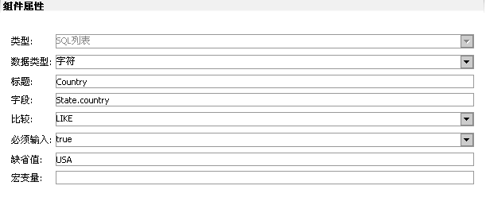

- 标题：在工程中目录树中显示的标题，可选设置。
- 立方体：选择使用的立方体模型。
- 数据源：使用规则与立方体同。
- 组件
- 分析方案 对象：
- 表：只有一个名称属性。
- 图：
- 过滤：组件，在实际报表中显示为过滤界面。
- 过滤项：分三类DD输入、值列表、SQL列表，各项之间逻辑为“and“关系。
- 输入：过滤界面中将显示为输入框；
- 值列表：过滤界面中将显示为下拉框；
- SQL列表：过滤界面中将显示为F7，里面的值为数据源sql查询结果集；

在cube下面的，将生产前缀public:，表示引用公用的cube：
如果在其它目录，比如report目录下，则不显示前缀，表示私有cube。只为分类而区分，实际使用中，可以引用任何本主题下任何地方的cube。但建议能公用的写在cube目录下，即使不公用，也建在cube下，建议建立子目录以便管理。
组件包括：1..n个分析方案，1个过滤组件。
一个分析方案对应一条mdx查询语句，里面可以新增一个图、表组件，图表组件共享该mdx，也就是运行时它们将共享一个多维模型，对它们的交互是联动的。
标题，备注头，备注尾(类似于文档的标题，页头，页尾)可以采用宏变量(过滤器中)或自定义变量，用来显示用户自定义信息。如果为空，则该行不显示。

数据类型：字符、数值、日期三种，日期格式yyyy-MM-dd H:mm:ss或yyyy-MM-dd。
标题：过滤界面显示的过滤项标签。
字段：表示该项过滤条件施加到那个数据上，格式为：
数据源名称.字段{, 数据源名称.字段}
如“Employee.manager_id,fact.Employee_id“。
数据源名称：该报表模型使用到的数据源项名称。
如果指定父/子字段,则F7会显示为树,是否叶节点用于虚模式查询时返回子结点是否为叶子,如果为空,则默认为非叶结点.